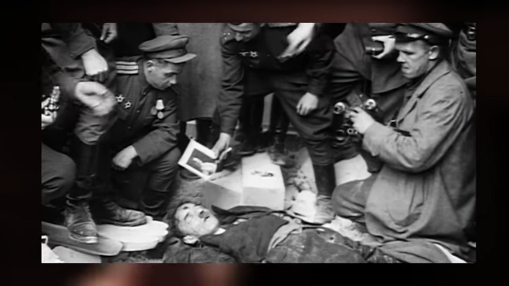

Adolf Hitler (bahasa Jerman: [ˈadɔlf ˈhɪtlɐ]; lahir di Braunau am Inn, Austria-Hongaria, 20 April 1889 – meninggal di Berlin, Jerman, 30 April 1945 pada umur 56 tahun) adalah seorang politisi Jerman dan ketua Partai Nazi (bahasa Jerman: Nationalsozialistische Deutsche Arbeiterpartei (NSDAP); Partai Pekerja Jerman Sosialis Nasional) kelahiran Austria. Ia menjabat sebagai Kanselir Jerman sejak 1933 sampai 1945 dan diktator Jerman Nazi (bergelar Führer und Reichskanzler) mulai tahun 1934 sampai 1945. Hitler menjadi tokoh utama Jerman Nazi, Perang Dunia II di Eropa, dan Holocaust. Hitler adalah veteran Perang Dunia I dengan banyak gelar. Ia bergabung dengan Partai Pekerja Jerman (pendahulu NSDAP) pada tahun 1919, dan menjadi ketua NSDAP tahun 1921. Tahun 1923, ia melancarkan kudeta di Munich yang dikenal dengan peristiwa Beer Hall Putsch. Kudeta yang gagal tersebut berujung dengan ditahannya Hitler. Di penjara, Hitler menulis memoarnya, Mein Kampf (Perjuanganku). Setelah bebas tahun 1924, Hitler mendapat dukungan rakyat dengan mengecam Perjanjian Versailles dan menjunjung Pan-Jermanisme, antisemitisme, dan anti-komunisme melalui pidatonya yang karismatik dan propaganda Nazi. Setelah ditunjuk sebagai kanselir pada tahun 1933, ia mengubah Republik Weimar menjadi Reich Ketiga, sebuah kediktatoran satu partai yang didasarkan pada ideologi Nazisme yang totalitarian dan autokrasi.
Pengumuman kematian Hitler
Menurut sejarah, kematian Hitler diumumkan melalui radio pada tanggal 1 Mei 1945. Materi ini didapat dari laporan dan investigasi intel british yg dirilis pada akhir tahun 1945. Pada pengumuman tersebut, dikabarkan Jerman sudah kalah dan Hitler pergi ke sebuah bunker dan merenggut nyawanya sendiri bersama kekasihnya. Berita ini kemudian dicurigai sebagai konspirasi. Pasalnya, pihak yang mengumumkan berita kematian Hitler di radio bukan dari pihak oposisi melainkan dari pihak Nazi sendiri. Hal ini dianggap menjadi sebuah keanehan yang mencurigakan. Setelah pengumuman kematian Hitler tersebar, Uni Soviet kemudian menyerbu bunker tempat kematian Hitler. Mereka kemudian menemukan jenazah Hitler dengan lubang peluru di kepalanya. Mereka kemudian mencocokkan jenazah dengan foto Hitler yang ternyata memang mirip. Namun, setelah investigasi dilanjutkan, dokter menyatakan bahwa jenazah tersebut bukanlah jenazah Hitler melainkan sebuah body double yang ditujukan untuk mengelabui musuh. Pada tahun 1968, Uni Soviet mengumumkan bahwa selama ini jenazah Hitler telah disimpan oleh mereka. Berita ini dianggap aneh mendengar bahwa Uni Soviet menunggu selama 23 tahun untuk mengumumkan berita ini. Lebih aneh lagi, pada tahun 2009 lalu seorang patologis dari Amerika Serikat melakukan tes DNA pada tengkorak hitler yg dimiliki Uni Soviet. Setelah diperiksa, ternyata tengkorak tersebut berasal dari DNA seorang wanita. Dunia merasa aneh mengapa Uni Soviet berbohong pada dunia.
Martin Bormann adalah satu nama penting dalam teori konspirasi Nazi dan Hitler. Ia adalah sekertaris pribadi hitler yang sangat loyal pada hitler. Martin sudah memperkirakan bahwa Nazi akan tumbang. Melihat hal ini, ia ingin Hitler berhenti diburu walaupun Nazi sudah tumbang. Kemudian Martin mengatur strategi untuk memalsukan kematian Hitler dengan menggunakan jenazah pengganti. Strategi ini kemudian dilakukan dengan mengajak 2 orang body double untuk berperan sebagai Hitler dan kekasihnya. Para pengganti ini diminta pergi ke bunker sementara Hitler dan kekasihnya melarikan diri entah ke mana. Setelah Hitler dikabarkan aman, Martin Bormann kemudian membunuh para pengganti ini dan mengumumkan kematian Hitler melalui radio seperti yang tertulis dalam sejarah.